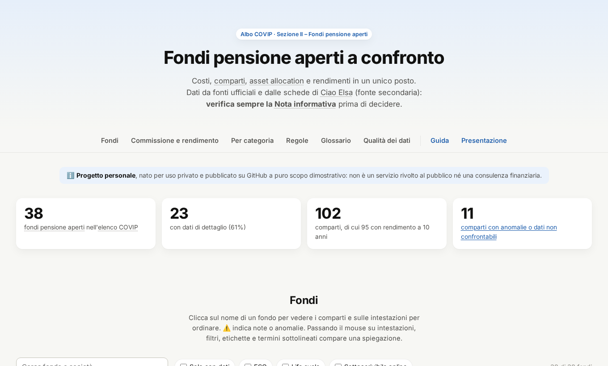
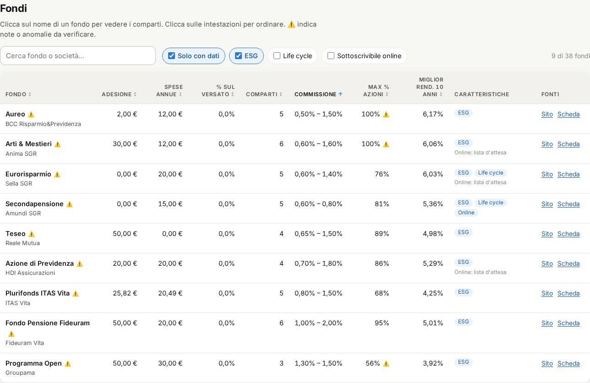
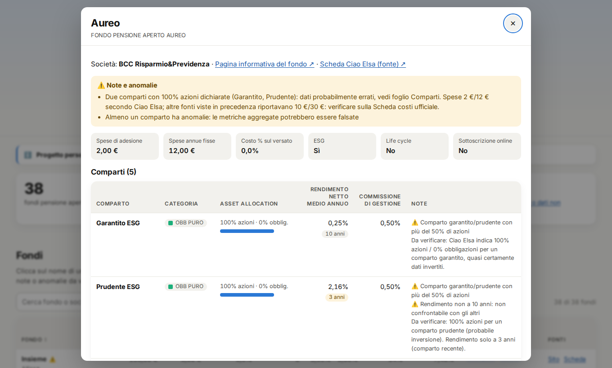
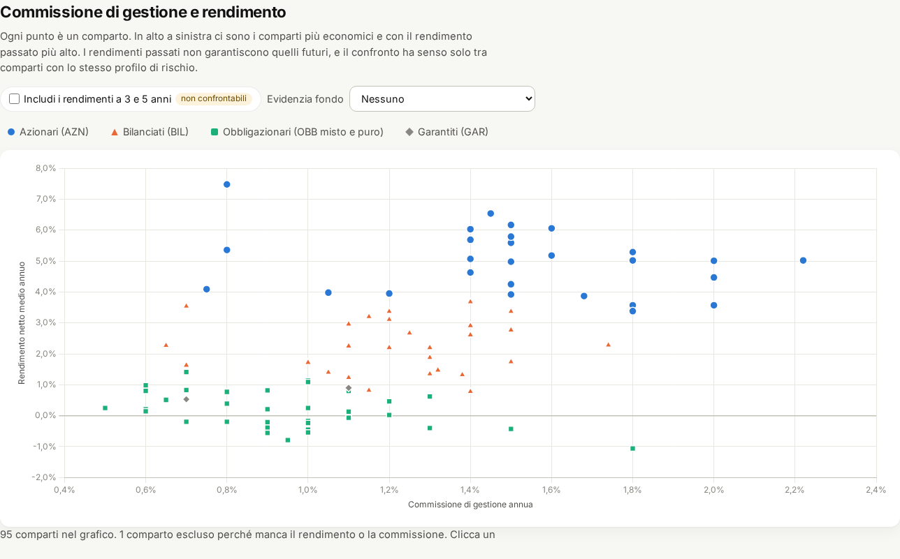
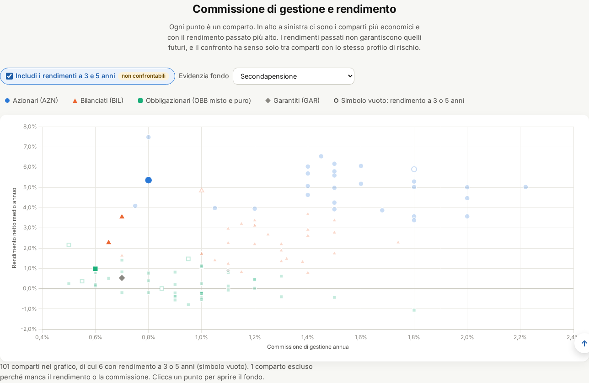
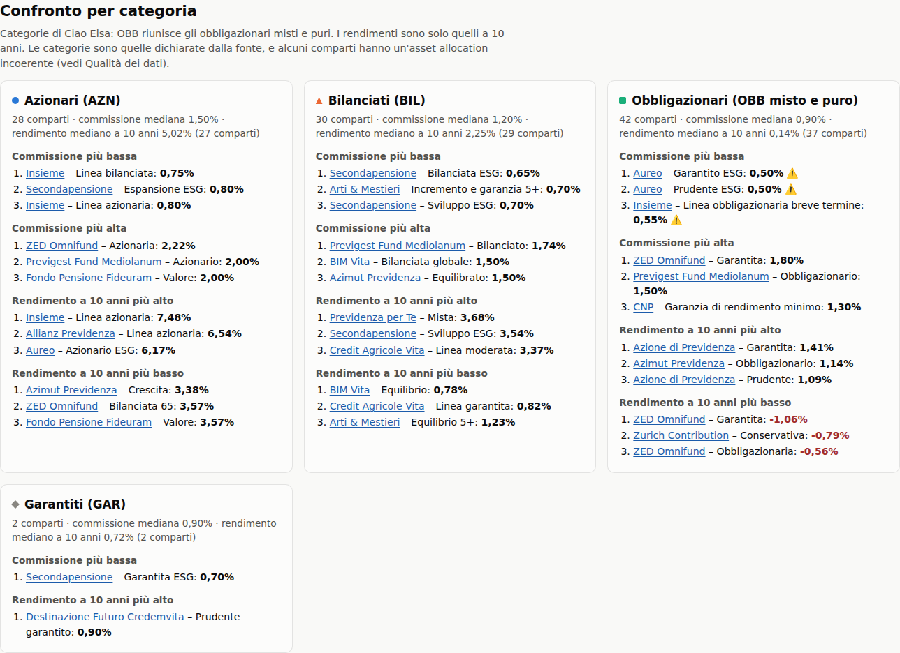
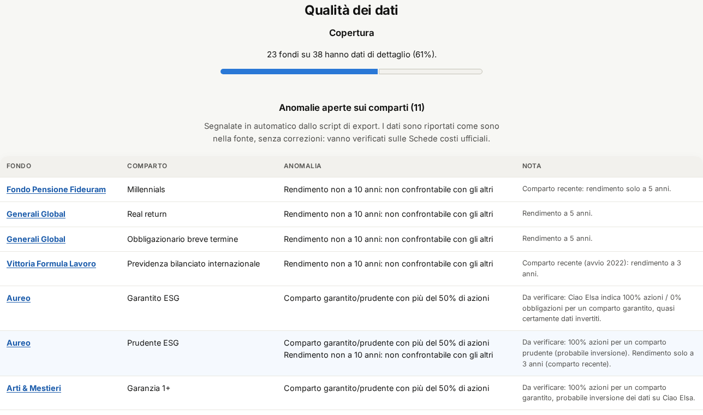
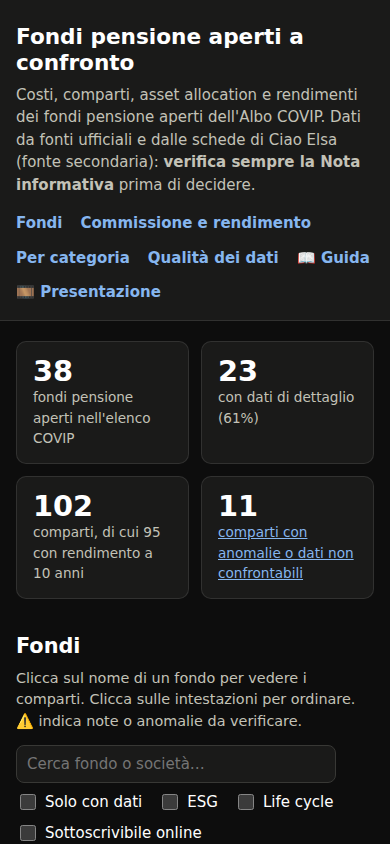

Costi, comparti, rendimenti e qualità dei dati dei fondi dell'Albo COVIP
→ argomento successivo · ↓ dettagli · Esc panoramica · F schermo intero
Apri la dashboard · Guida completa
Progetto personale, pubblicato su GitHub a puro scopo dimostrativo.
La presentazione è una griglia: in orizzontale gli argomenti, in verticale gli approfondimenti.
Le frecce in basso a destra mostrano dove puoi andare. Su telefono: scorri con il dito.
↓ cosa trovi nella dashboard
Numeri letti dal vivo da data/meta.json.
Ogni dato ha un link alla fonte. La fonte di verità è il file Excel del repository.
Esempio: alcuni comparti "garantiti" risultano al 100% azioni. Quasi certamente il dato è invertito nella fonte: resta così, segnalato, finché non viene verificato sulla Scheda costi.

↓ una sezione alla volta

Ricerca, filtri, ordinamento con un clic sulle intestazioni. ⚠️ indica note o anomalie.

Costi, comparti, asset allocation e periodo del rendimento. Il link si può condividere.

In alto a sinistra: costa poco e ha reso di più. Confronta solo punti dello stesso colore.

I simboli vuoti sono rendimenti a 3 o 5 anni: non confrontabili con quelli a 10.



↓ perché i costi contano
Esempio illustrativo:
Differenza: … sugli stessi versamenti.
Calcolo semplificato, senza tasse né spese fisse. Non è una previsione.
↓ i passi uno per uno
python scripts/export_xlsx.py # Excel → JSON, con validazione
./scripts/anteprima.sh # export + test + http://localhost:8000Il file Excel si modifica in Excel, così i valori delle formule restano in cache.
vX.Y.Z e release con note e allegati
(dati JSON, Excel, zip del sito)sito:/script:/feat:, patch per il restopython scripts/screenshots.py # rigenera gli screenshotOgni modifica alla dashboard aggiorna insieme guida, presentazione, screenshot e CLAUDE.md.
📊 Dashboard · 📖 Guida · 💻 GitHub
Progetto personale, nato per uso privato e pubblicato su GitHub a puro scopo dimostrativo: non è un servizio rivolto al pubblico né una consulenza finanziaria. Prima di aderire leggi la Nota informativa, la Scheda costi e l'ISC del fondo su covip.it.